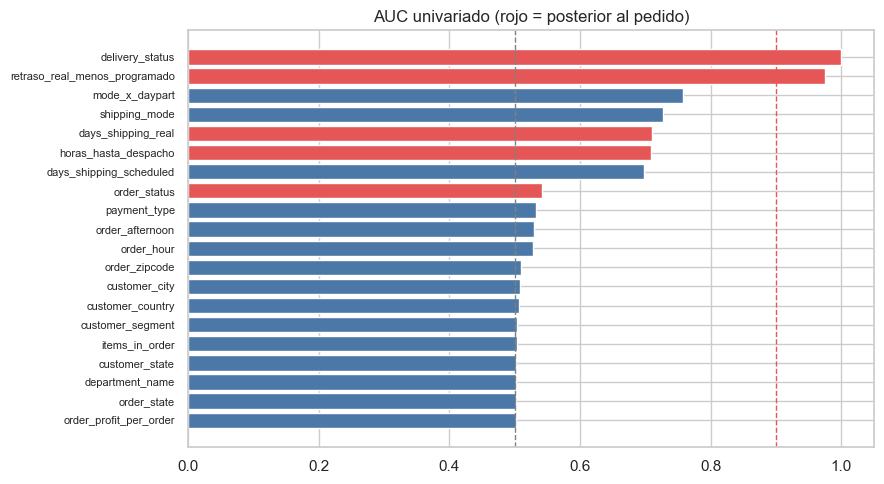

9. Auditoría de fuga de datos (2.5): «DataCo sin fuga»#
El momento de predicción es la creación del pedido: el cliente acaba de comprar, el modo de envío y los días prometidos ya están definidos, pero el pedido aún no se ha despachado ni entregado. Se audita cada variable (original y derivada): disponibilidad en ese momento, derivación del objetivo, identificadores y proxies, AUC univariado, población de pedidos cancelados y entidades repetidas entre particiones.
DataCo es conocido por producir modelos de «retraso» con AUC ≈ 1: casi siempre se debe a
usar Days for shipping (real) o Delivery Status, que son el resultado. Este capítulo
lo demuestra y define la versión sin fuga que usa el resto del libro.
from pathlib import Path
import re, sys, warnings
import numpy as np
import pandas as pd
import matplotlib.pyplot as plt
import seaborn as sns
from IPython.display import Markdown, display
project_root = Path.cwd().resolve()
while not (project_root / "_config.yml").exists():
if project_root.parent == project_root:
raise FileNotFoundError("No se encontró _config.yml. Ejecuta el notebook dentro de la carpeta del libro.")
project_root = project_root.parent
if str(project_root) not in sys.path:
sys.path.insert(0, str(project_root))
for _folder in ("tables", "figures"): # se crean si no existen
(project_root / _folder).mkdir(exist_ok=True)
from src.project_utils import *
configure_plots()
pd.set_option("display.max_columns", 80)
pd.set_option("display.width", 170)
pd.set_option("display.max_colwidth", 70)
TABLES = project_root / "tables"
def md_out(text):
display(Markdown(text))
from sklearn.model_selection import cross_val_score
from sklearn.metrics import roc_auc_score
train = load_train(include_canceled=True)
y = train[TARGET]
folds = temporal_folds(train[DATE_COL])
1. Disponibilidad de cada variable al momento de predicción#
POSTERIOR = {
"days_shipping_real": "Se conoce cuando el pedido se envía/entrega; el objetivo es días reales > programados.",
"delivery_status": "Estado final de la entrega; «Late delivery» ES la etiqueta 1.",
"order_status": "Estado del pedido en el sistema (COMPLETE, CLOSED, CANCELED, SUSPECTED_FRAUD...); se actualiza después de la compra.",
"shipping_date": "Fecha de despacho = fecha del pedido + días reales; posterior y equivalente a days_shipping_real.",
}
def disponibilidad(c):
if c == TARGET:
return "No", "Variable objetivo."
if c in POSTERIOR:
return "No", POSTERIOR[c]
if c in PII_COLS:
return "Sí, pero excluida", "Dato personal o enmascarado; sin valor predictivo legítimo."
if c in (ORDER_COL, ITEM_COL):
return "Solo agrupar", "Identificador; correlaciona con el tiempo (es secuencial) y no describe el pedido."
if c in (CUSTOMER_COL, "order_customer_id"):
return "Solo agrupar", "Identificador del cliente (entidad); usarlo como predictor memorizaría clientes."
if c in ID_COLS:
return "Sí, como código", "Identificador numérico de una categoría ya presente como texto (redundante)."
if c == DATE_COL:
return "Sí", "Marca temporal del pedido; se usa para la partición y para derivar calendario."
if c in ("benefit_per_order", "order_profit_per_order", "order_item_profit_ratio"):
return "Sí, con cautela", "Ganancia calculada con precio, descuento y costo del producto; en DataCo se registra con la venta."
if c == "days_shipping_scheduled":
return "Sí", "Promesa de entrega definida por el modo de envío al comprar."
if c in ("items_in_order", "orders_prev_7d") or c.startswith("order_") and c.endswith(("_sin", "_cos")) or c in ("order_year", "order_month", "order_dow", "order_hour", "order_weekend"):
return "Sí", "Derivada del momento de la compra o del pasado (ventana cerrada a la izquierda)."
return "Sí", "Atributo del pedido, producto, cliente o destino conocido al comprar."
cols = [c for c in train.columns if not c.endswith(("_sin", "_cos"))]
disp = pd.DataFrame([(c, *disponibilidad(c)) for c in cols], columns=["variable", "disponible_al_predecir", "evidencia"])
display(disp[disp["disponible_al_predecir"] != "Sí"])
| variable | disponible_al_predecir | evidencia | |
|---|---|---|---|
| 1 | days_shipping_real | No | Se conoce cuando el pedido se envía/entrega; el objetivo es días r... |
| 3 | benefit_per_order | Sí, con cautela | Ganancia calculada con precio, descuento y costo del producto; en ... |
| 5 | delivery_status | No | Estado final de la entrega; «Late delivery» ES la etiqueta 1. |
| 6 | late_delivery_risk | No | Variable objetivo. |
| 7 | category_id | Sí, como código | Identificador numérico de una categoría ya presente como texto (re... |
| 11 | customer_email | Sí, pero excluida | Dato personal o enmascarado; sin valor predictivo legítimo. |
| 12 | customer_fname | Sí, pero excluida | Dato personal o enmascarado; sin valor predictivo legítimo. |
| 13 | customer_id | Solo agrupar | Identificador del cliente (entidad); usarlo como predictor memoriz... |
| 14 | customer_lname | Sí, pero excluida | Dato personal o enmascarado; sin valor predictivo legítimo. |
| 15 | customer_password | Sí, pero excluida | Dato personal o enmascarado; sin valor predictivo legítimo. |
| 18 | customer_street | Sí, pero excluida | Dato personal o enmascarado; sin valor predictivo legítimo. |
| 19 | customer_zipcode | Sí, pero excluida | Dato personal o enmascarado; sin valor predictivo legítimo. |
| 20 | department_id | Sí, como código | Identificador numérico de una categoría ya presente como texto (re... |
| 27 | order_customer_id | Solo agrupar | Identificador del cliente (entidad); usarlo como predictor memoriz... |
| 29 | order_id | Solo agrupar | Identificador; correlaciona con el tiempo (es secuencial) y no des... |
| 30 | order_item_cardprod_id | Sí, como código | Identificador numérico de una categoría ya presente como texto (re... |
| 33 | order_item_id | Solo agrupar | Identificador; correlaciona con el tiempo (es secuencial) y no des... |
| 35 | order_item_profit_ratio | Sí, con cautela | Ganancia calculada con precio, descuento y costo del producto; en ... |
| 39 | order_profit_per_order | Sí, con cautela | Ganancia calculada con precio, descuento y costo del producto; en ... |
| 42 | order_status | No | Estado del pedido en el sistema (COMPLETE, CLOSED, CANCELED, SUSPE... |
| 44 | product_card_id | Sí, como código | Identificador numérico de una categoría ya presente como texto (re... |
| 45 | product_category_id | Sí, como código | Identificador numérico de una categoría ya presente como texto (re... |
| 51 | shipping_date | No | Fecha de despacho = fecha del pedido + días reales; posterior y eq... |
2. Variables derivadas del objetivo y AUC univariado#
AUC univariado de todas las variables, incluidas las sospechosas. Valores cercanos a 1 son señal de alerta. Las categóricas se codifican fuera de pliegue (temporal).
train["retraso_real_menos_programado"] = train["days_shipping_real"] - train["days_shipping_scheduled"]
train["horas_hasta_despacho"] = (train["shipping_date"] - train[DATE_COL]).dt.total_seconds() / 3600
num_like = [c for c in cols + ["retraso_real_menos_programado", "horas_hasta_despacho"]
if c not in (TARGET, DATE_COL, "shipping_date") and pd.api.types.is_numeric_dtype(train[c]) and c not in PII_COLS]
cat_like = [c for c in cols if c not in num_like + [TARGET, DATE_COL, "shipping_date"] + PII_COLS
and train[c].nunique() < 5000 and train[c].nunique() > 1]
filas = [{"variable": c, "tipo": "numérica", "AUC univariado": univariate_auc(train[c], y)} for c in num_like]
filas += [{"variable": c, "tipo": "categórica", "AUC univariado": categorical_auc_oof(train[c], y, folds)} for c in cat_like]
auc = pd.DataFrame(filas).dropna().sort_values("AUC univariado", ascending=False).reset_index(drop=True)
auc["alerta"] = np.select([auc["AUC univariado"] > 0.90, auc["AUC univariado"] > 0.75], ["ALERTA (>0,90)", "revisar (>0,75)"], "sin alerta")
auc.to_csv(TABLES / "auc_univariado_todas.csv", index=False)
display(auc.head(15).round(4))
fig, ax = plt.subplots(figsize=(9, 5))
top = auc.head(20).iloc[::-1]
ax.barh(top["variable"], top["AUC univariado"], color=np.where(top["variable"].isin(list(POSTERIOR) + ["retraso_real_menos_programado", "horas_hasta_despacho"]), "#e45756", "#4c78a8"))
ax.axvline(0.9, color="#e45756", ls="--", lw=1); ax.axvline(0.5, color="gray", ls="--", lw=1)
ax.set_title("AUC univariado (rojo = posterior al pedido)"); ax.tick_params(axis="y", labelsize=8)
plt.tight_layout(); save_figure(fig, "09_auc_univariado.png"); plt.show()
display(pd.crosstab(train["delivery_status"], y))
| variable | tipo | AUC univariado | alerta | |
|---|---|---|---|---|
| 0 | delivery_status | categórica | 1.0000 | ALERTA (>0,90) |
| 1 | retraso_real_menos_programado | numérica | 0.9747 | ALERTA (>0,90) |
| 2 | mode_x_daypart | categórica | 0.7581 | revisar (>0,75) |
| 3 | shipping_mode | categórica | 0.7265 | sin alerta |
| 4 | days_shipping_real | numérica | 0.7098 | sin alerta |
| 5 | horas_hasta_despacho | numérica | 0.7084 | sin alerta |
| 6 | days_shipping_scheduled | numérica | 0.6978 | sin alerta |
| 7 | order_status | categórica | 0.5415 | sin alerta |
| 8 | payment_type | categórica | 0.5323 | sin alerta |
| 9 | order_afternoon | numérica | 0.5297 | sin alerta |
| 10 | order_hour | numérica | 0.5280 | sin alerta |
| 11 | order_zipcode | numérica | 0.5094 | sin alerta |
| 12 | customer_city | categórica | 0.5080 | sin alerta |
| 13 | customer_country | categórica | 0.5062 | sin alerta |
| 14 | customer_segment | categórica | 0.5033 | sin alerta |

| late_delivery_risk | 0 | 1 |
|---|---|---|
| delivery_status | ||
| Advance shipping | 32954 | 0 |
| Late delivery | 0 | 78549 |
| Shipping canceled | 6032 | 0 |
| Shipping on time | 25540 | 0 |
Interpretación. delivery_status separa perfectamente (AUC = 1): es la etiqueta con
otro nombre. La diferencia días reales − programados reproduce la regla que define el
objetivo (AUC ≈ 0,97). Lección importante: days_shipping_real sola tiene un AUC de
≈ 0,71, parecido al del modo de envío, y no dispararía la alerta univariada; la fuga aparece al
combinarla con los días programados. Por eso la auditoría no se basa solo en el AUC, sino
en la disponibilidad temporal de cada variable. order_status también es posterior y
delata cancelaciones. Todas se excluyen. days_shipping_scheduled
y shipping_mode tienen AUC ≈ 0,7, alto pero legítimo: la promesa de entrega se conoce al
comprar. Los identificadores secuenciales (order_id, order_item_id) tienen AUC ≈ 0,5, pero
codifican el tiempo y no describen el pedido: se excluyen.
3. Demostración: DataCo con fuga vs sin fuga#
Misma regresión logística, mismos pliegues temporales con gap. Solo cambia si se incluyen variables posteriores al pedido.
from sklearn.pipeline import Pipeline
from sklearn.preprocessing import OneHotEncoder, StandardScaler
from sklearn.compose import ColumnTransformer
from sklearn.linear_model import LogisticRegression
def lr(num, cat):
return Pipeline([("prep", ColumnTransformer([("n", StandardScaler(), num), ("c", OneHotEncoder(handle_unknown="ignore"), cat)])),
("clf", LogisticRegression(max_iter=2000))])
escenarios = {
"Con fuga: días reales + modo de envío": (["days_shipping_real", "days_shipping_scheduled"], ["shipping_mode"]),
"Con fuga: estado del pedido + modo de envío": ([], ["order_status", "shipping_mode"]),
"Sin fuga: solo modo de envío": ([], ["shipping_mode"]),
}
res = []
for nombre, (num, cat) in escenarios.items():
s = cross_val_score(lr(num, cat), train[num + cat], y, cv=folds, scoring="roc_auc", n_jobs=1)
res.append({"escenario": nombre, "ROC-AUC media (CV temporal)": s.mean(), "desv. est.": s.std()})
con_sin = pd.DataFrame(res)
con_sin.to_csv(TABLES / "con_fuga_vs_sin_fuga.csv", index=False)
display(con_sin.round(4))
| escenario | ROC-AUC media (CV temporal) | desv. est. | |
|---|---|---|---|
| 0 | Con fuga: días reales + modo de envío | 0.9748 | 0.0024 |
| 1 | Con fuga: estado del pedido + modo de envío | 0.7617 | 0.0021 |
| 2 | Sin fuga: solo modo de envío | 0.7273 | 0.0027 |
Interpretación. Con los días reales el modelo alcanza un ROC-AUC casi perfecto: no predice, lee la respuesta (no llega a 1 solo porque los cancelados tienen etiqueta 0). Con el estado del pedido mejora sobre el modo de envío porque detecta las cancelaciones. Sin fuga, el modo de envío solo da un AUC ≈ 0,73. Ese es el techo realista contra el que se compara el modelo base.
¿Cómo se genera la etiqueta? El techo sin fuga#
Las variables con fuga no entran al modelo, pero sí sirven para entender el mecanismo que genera la etiqueta. Se cruza, para los pedidos despachados, el modo de envío con los días reales y la jornada del pedido.
desp = train[train["delivery_status"] != "Shipping canceled"]
dist_real = pd.crosstab(desp["shipping_mode"], desp["days_shipping_real"], normalize="index").round(3)
dist_real["días programados"] = desp.groupby("shipping_mode")["days_shipping_scheduled"].first()
display(dist_real)
celda = desp.groupby("mode_x_daypart")[TARGET].agg(["mean", "size"]).rename(columns={"mean": "P(tardía)", "size": "líneas"})
display(celda.round(3))
p_bayes = desp["mode_x_daypart"].map(celda["P(tardía)"])
techo = pd.DataFrame([{"referencia": "Techo sin fuga (tasa por modo × jornada, en entrenamiento)",
"ROC-AUC": roc_auc_score(desp[TARGET], p_bayes),
"Accuracy": float(((p_bayes >= 0.5).astype(int) == desp[TARGET]).mean())}])
techo.to_csv(TABLES / "techo_sin_fuga.csv", index=False)
display(techo.round(4))
| days_shipping_real | 0 | 1 | 2 | 3 | 4 | 5 | 6 | días programados |
|---|---|---|---|---|---|---|---|---|
| shipping_mode | ||||||||
| First Class | 0.000 | 0.000 | 1.000 | 0.000 | 0.000 | 0.000 | 0.000 | 1 |
| Same Day | 0.531 | 0.469 | 0.000 | 0.000 | 0.000 | 0.000 | 0.000 | 0 |
| Second Class | 0.000 | 0.000 | 0.202 | 0.200 | 0.199 | 0.201 | 0.199 | 2 |
| Standard Class | 0.000 | 0.000 | 0.202 | 0.201 | 0.198 | 0.195 | 0.203 | 4 |
| P(tardía) | líneas | |
|---|---|---|
| mode_x_daypart | ||
| First Class | AM | 1.000 | 10056 |
| First Class | PM | 1.000 | 10986 |
| Same Day | AM | 0.000 | 3911 |
| Same Day | PM | 1.000 | 3456 |
| Second Class | AM | 0.797 | 13600 |
| Second Class | PM | 0.800 | 13283 |
| Standard Class | AM | 0.396 | 41003 |
| Standard Class | PM | 0.401 | 40748 |
| referencia | ROC-AUC | Accuracy | |
|---|---|---|---|
| 0 | Techo sin fuga (tasa por modo × jornada, en entrenamiento) | 0.7754 | 0.7227 |
Interpretación: el dataset es simulado con reglas simples.
Standard Class promete 4 días y los días reales son uniformes entre 2 y 6 → tarde con probabilidad 2/5 = 40 %, al azar.
Second Class promete 2 días y los reales son uniformes entre 2 y 6 → tarde 4/5 = 80 %.
First Class promete 1 día y tarda siempre 2 → tarde el 100 %.
Same Day promete 0 días: tarda 0 si se pide antes del mediodía y 1 si se pide después → la jornada lo determina.
Con la información disponible al crear el pedido, lo mejor que se puede hacer es asignar esas probabilidades: el techo sin fuga es ROC-AUC ≈ 0,77 y accuracy ≈ 0,73. Dentro de Standard y Second Class el resultado es aleatorio: ninguna variable del pedido, del cliente o del destino puede explicarlo, y por eso todas tienen AUC ≈ 0,5. Cualquier modelo que supere claramente este techo está usando fuga.
4. Pedidos cancelados y sospechosos de fraude#
Un pedido cancelado o sospechoso de fraude nunca se entrega, así que su etiqueta es 0 por definición (no «llegó a tiempo»). Mezclarlos con entregas reales cambia la pregunta y convierte a variables asociadas con el fraude (por ejemplo, el medio de pago) en proxies de la cancelación. Criterio fijado antes de mirar el resultado: excluir de la población de modelado los estados de entrega cuya tasa de retraso sea < 2 %.
canc = train["delivery_status"] == "Shipping canceled"
tabla = train.groupby("delivery_status")[TARGET].agg(["size", "mean"]).rename(columns={"size": "líneas", "mean": "tasa_tardía"})
display(tabla.round(4))
display(pd.crosstab(train["payment_type"], train["order_status"].where(train["order_status"].isin(["CANCELED", "SUSPECTED_FRAUD"]), "resto"), normalize="index").round(4))
auc_pago_todo = categorical_auc_oof(train["payment_type"], y, folds)
tr_ok = train[~canc].reset_index(drop=True)
auc_pago_desp = categorical_auc_oof(tr_ok["payment_type"], tr_ok[TARGET], temporal_folds(tr_ok[DATE_COL]))
rate_c = float(y[canc].mean())
excluir = bool(canc.any() and rate_c < 0.02)
decision = pd.DataFrame([{"excluir_cancelados": excluir, "estado": "Shipping canceled (CANCELED + SUSPECTED_FRAUD)",
"n_excluidos_train": int(canc.sum()), "pct_excluidos": 100 * canc.mean(),
"tasa_tardia_cancelados": rate_c, "tasa_tardia_resto": float(y[~canc].mean()),
"criterio": "excluir si la tasa de retraso del estado es < 2 % (no entregados)"}])
decision.to_csv(TABLES / "decision_poblacion.csv", index=False)
md_out(f"Líneas canceladas/fraude en entrenamiento: **{es(int(canc.sum()), 0)}** ({es(canc.mean(), 2, pct=True)}), tasa de retraso **{es(rate_c, 2, pct=True)}**.\n\n"
f"AUC univariado de `payment_type`: **{es(auc_pago_todo, 3)}** con cancelados y **{es(auc_pago_desp, 3)}** solo con pedidos despachados. "
"Toda su «señal» venía de que el fraude se concentra en transferencias.\n\n"
+ ("**Decisión:** se **excluyen** los pedidos cancelados y sospechosos de fraude de la población de modelado, en entrenamiento y prueba. "
"La regla se basa en el estado de entrega (no en el resultado del modelo) y se aplica **después** de la partición. "
"La pregunta del modelo queda: *dado que el pedido se despachará, ¿llegará tarde?* Los capítulos 10 y 11 leen esta decisión."
if excluir else "**Decisión:** se conservan."))
| líneas | tasa_tardía | |
|---|---|---|
| delivery_status | ||
| Advance shipping | 32954 | 0.0 |
| Late delivery | 78549 | 1.0 |
| Shipping canceled | 6032 | 0.0 |
| Shipping on time | 25540 | 0.0 |
| order_status | CANCELED | SUSPECTED_FRAUD | resto |
|---|---|---|---|
| payment_type | |||
| CASH | 0.0000 | 0.0000 | 1.0000 |
| DEBIT | 0.0000 | 0.0000 | 1.0000 |
| PAYMENT | 0.0000 | 0.0000 | 1.0000 |
| TRANSFER | 0.0735 | 0.0799 | 0.8466 |
Líneas canceladas/fraude en entrenamiento: 6.032 (4,22 %), tasa de retraso 0,00 %.
AUC univariado de payment_type: 0,532 con cancelados y 0,504 solo con pedidos despachados. Toda su «señal» venía de que el fraude se concentra en transferencias.
Decisión: se excluyen los pedidos cancelados y sospechosos de fraude de la población de modelado, en entrenamiento y prueba. La regla se basa en el estado de entrega (no en el resultado del modelo) y se aplica después de la partición. La pregunta del modelo queda: dado que el pedido se despachará, ¿llegará tarde? Los capítulos 10 y 11 leen esta decisión.
5. Entidades repetidas y duplicados entre particiones#
Se lee la prueba solo para comprobar identificadores y patrones (sin etiquetas ni estadísticas que guíen decisiones).
test_full = load_test(include_canceled=True)
pred_cols = [c for c in RENAME.values() if c not in [TARGET, ITEM_COL, ORDER_COL, DATE_COL, "shipping_date"] + LEAKAGE_COLS]
h_tr = pd.util.hash_pandas_object(train[pred_cols], index=False)
h_te = pd.util.hash_pandas_object(test_full[pred_cols], index=False)
compartidos = set(h_tr) & set(h_te)
rng = np.random.default_rng(RANDOM_STATE)
perm = rng.permutation(len(train)); cut = int(0.8 * len(perm))
naive_share = train.iloc[perm[cut:]][ORDER_COL].isin(set(train.iloc[perm[:cut]][ORDER_COL])).mean()
dup = pd.DataFrame([
{"comprobación": "pedidos en entrenamiento y prueba", "resultado": len(set(train[ORDER_COL]) & set(test_full[ORDER_COL]))},
{"comprobación": "líneas (order_item_id) en ambos", "resultado": len(set(train[ITEM_COL]) & set(test_full[ITEM_COL]))},
{"comprobación": "pedido más reciente de train vs más antiguo de test (días)", "resultado": (test_full[DATE_COL].min() - train[DATE_COL].max()).days},
{"comprobación": "clientes con pedidos en ambos (esperado, no se usan como predictor)", "resultado": len(set(train[CUSTOMER_COL]) & set(test_full[CUSTOMER_COL]))},
{"comprobación": "patrones de predictoras idénticos en ambos (sin ids)", "resultado": len(compartidos)},
{"comprobación": "% de líneas de validación cuyo pedido estaría en train con partición ALEATORIA por filas", "resultado": round(100 * naive_share, 1)},
])
dup.to_csv(TABLES / "auditoria_duplicados.csv", index=False)
display(dup)
| comprobación | resultado | |
|---|---|---|
| 0 | pedidos en entrenamiento y prueba | 0.0 |
| 1 | líneas (order_item_id) en ambos | 0.0 |
| 2 | pedido más reciente de train vs más antiguo de test (días) | 7.0 |
| 3 | clientes con pedidos en ambos (esperado, no se usan como predictor) | 6426.0 |
| 4 | patrones de predictoras idénticos en ambos (sin ids) | 0.0 |
| 5 | % de líneas de validación cuyo pedido estaría en train con partici... | 89.6 |
Interpretación. La partición cronológica no comparte pedidos ni líneas y deja 7 días de separación. Una partición aleatoria por filas pondría en validación líneas cuyo pedido (con la misma etiqueta) está en entrenamiento: eso inflaría las métricas. No hay filas con patrones de predictoras idénticos entre entrenamiento y prueba: no hay fuga por duplicación.
6. Conclusión de la auditoría#
final = disp.merge(auc[["variable", "AUC univariado"]], on="variable", how="left")
def decision_var(v):
if v == TARGET: return "Objetivo"
if v in POSTERIOR: return "Excluir: fuga (posterior al pedido)"
if v in PII_COLS: return "Excluir: dato personal"
if v in (ORDER_COL, ITEM_COL, CUSTOMER_COL, "order_customer_id"): return "Excluir: identificador (solo agrupar)"
if v in ID_COLS: return "Excluir: código redundante"
if v == DATE_COL: return "Usar solo para partición y calendario"
if v in ("product_description", "product_status", "product_image", "order_zipcode"): return "Excluir: vacía, constante o redundante"
if v in ("sales_per_customer", "order_item_total", "order_profit_per_order", "order_item_product_price", "product_price", "benefit_per_order",
"order_item_discount", "days_shipping_scheduled", "customer_country", "customer_city", "customer_state",
"order_city", "order_state", "product_name", "customer_zipcode", "order_year", "order_month", "order_dow", "order_hour"):
return "Excluir: redundante o reemplazada (cap. 10)"
return "Candidata (se decide en cap. 10)"
final["decisión"] = final["variable"].map(decision_var)
final["riesgo_de_fuga"] = np.select([final["variable"].isin(list(POSTERIOR) + [TARGET]), final["variable"].isin([ORDER_COL, ITEM_COL])],
["Alto", "Medio (codifica tiempo)"], "Bajo")
final.to_csv(TABLES / "auditoria_fuga.csv", index=False)
display(final[["variable", "disponible_al_predecir", "AUC univariado", "riesgo_de_fuga", "decisión"]].round(4))
| variable | disponible_al_predecir | AUC univariado | riesgo_de_fuga | decisión | |
|---|---|---|---|---|---|
| 0 | payment_type | Sí | 0.5323 | Bajo | Candidata (se decide en cap. 10) |
| 1 | days_shipping_real | No | 0.7098 | Alto | Excluir: fuga (posterior al pedido) |
| 2 | days_shipping_scheduled | Sí | 0.6978 | Bajo | Excluir: redundante o reemplazada (cap. 10) |
| 3 | benefit_per_order | Sí, con cautela | 0.5019 | Bajo | Excluir: redundante o reemplazada (cap. 10) |
| 4 | sales_per_customer | Sí | 0.5009 | Bajo | Excluir: redundante o reemplazada (cap. 10) |
| ... | ... | ... | ... | ... | ... |
| 57 | order_weekend | Sí | 0.5016 | Bajo | Candidata (se decide en cap. 10) |
| 58 | order_afternoon | Sí | 0.5297 | Bajo | Candidata (se decide en cap. 10) |
| 59 | mode_x_daypart | Sí | 0.7581 | Bajo | Candidata (se decide en cap. 10) |
| 60 | items_in_order | Sí | 0.5030 | Bajo | Candidata (se decide en cap. 10) |
| 61 | orders_prev_7d | Sí | 0.5004 | Bajo | Candidata (se decide en cap. 10) |
62 rows × 5 columns
Lista de variables descartadas o en observación.
Descartadas por fuga:
days_shipping_real,delivery_status,order_status,shipping_date(y cualquier derivada de ellas).Descartadas por ser identificadores o datos personales: ids de pedido, línea, cliente, producto y categoría; nombre, apellido, correo, contraseña, calle y código postal.
Población: se excluyen los pedidos cancelados o sospechosos de fraude (etiqueta 0 por construcción);
payment_typedeja de tener señal una vez excluidos.En observación: la ganancia (
order_item_profit_ratio) se considera conocida al vender en DataCo, pero en una empresa real podría incluir ajustes posteriores; su AUC ≈ 0,50 descarta que sea un proxy. El destino (mercado/región/país) no es fuga, pero está confundido con el periodo (cap. 7–8).
Con esto, el resto del libro trabaja con «DataCo (sin fuga)» y su métrica principal, ROC-AUC.